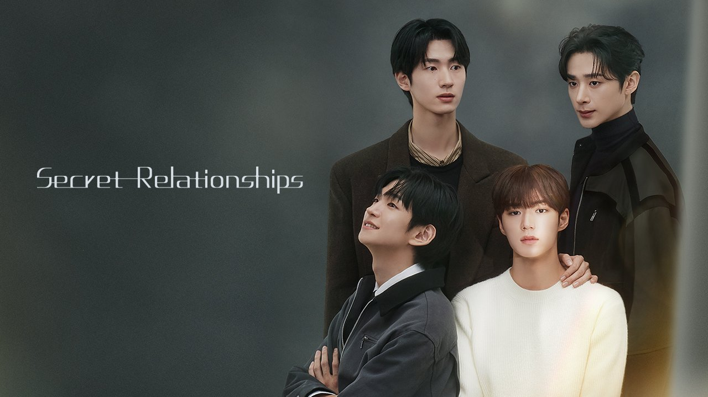

Inteligente, astuto e engenhoso, Da On trabalhou duro para superar a pobreza. Mas seu jeito econômico está irritando o seu colega de trabalho, Seong Hyeon, que o detesta! Apos um incidente envolvendo seu próprios pais em dificuldades, Da On começa a se aproximar inesperadamente de Seong Hyeon, ao mesmo tempo que equilibra os seus sentimentos por seu ex-proessor particular, Jae min. Com emoções confusas e segredos não ditos, Da On será rico em amor ou voltará à pobreza?
A série Secret Relationshhips foi inspirado em uma webtoon chamada homônimo da Kakao Entertainment. É uma webtoon famosa que acumulou mais de 170 milhões de visualizações em vários países ao redor do mundo. A série foi produzida pela Playlist Studio, em parceria com a Kakao Entertainment e a emissora japonesa Fuji TV e o primeiro episódio da série foi lançado em 27 de fevereiro 2025 .
Clique aqui para ver mais sobre os Personagens